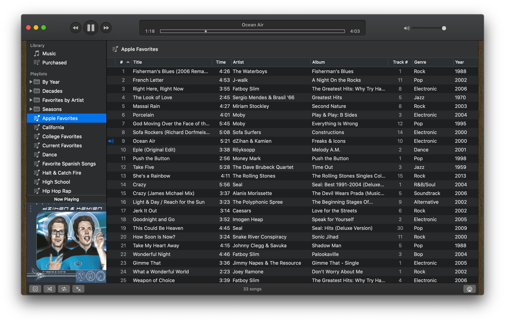
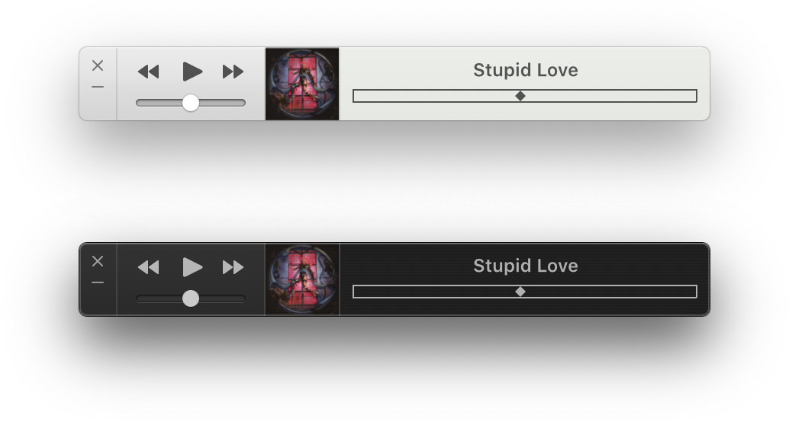

Music - Design
In order to achieve perfect pixel alignment on both retina and non-retina display, many of the UI controls and other static UI elements are drawn using Core Graphics and/or Core Animation. Aside from drawing frames and glyphs, this allows for precise control over drawing shadows, lighting effects, and textures such as pinstripes.

Player Controls
Core Graphics
The player controls are custom drawn NSButtons using Core Graphics. They adapt to all states an NSButton can have including Dark Mode. They behavior was also customized so that they can be clicked or held down (for fast forward or rewind).

LCD Display
Core Animation
The LCD was designed to call attention to itself. Both the background and scrubber (NSSlider) are custom drawn elements using Core Graphics while the track information animates using Core Animation.

Volume Slider
Core Graphics
The player volume slider is another custom drawn NSSlider (using Core Graphics) to match the lighting and shadows of a physical control.

Wood Trim
AppKit
The wood trim gives it an additional touch of realism but also pays homage to another music app we are all familiar with: Dieter Rams’ Braun SK61 Record Player.

Dark Mode
AppKit
UI elements not only adapt to Dark Mode but also take on new characteristics. For example, the LCD Display takes on a pinstripe texture and a darker and the wood trim goes from Maple to Walnut for a darker appearance.

Mini Player
AppKit
No Music app is complete without a mini player. This mini player includes only the essential controls and track information and adapts to dark mode.
© 2019-2020 Mario A Guzman
Personal
Downloads